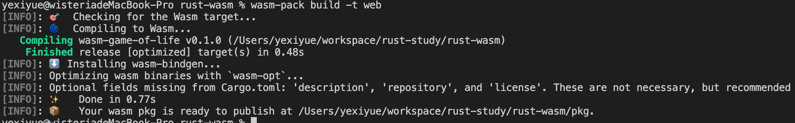

介绍
rust wasm 学习
# rust wasm 学习
可以参考该教程进行学习
介绍 - Rust和WebAssembly中文文档 (wasmdev.cn) (opens new window)
# 1.rust wasm开发环境搭建
安装was-pack
cargo install was-pack
安装rust target
rustup target add wasm32-unknown-unknown
安装特定依赖
[package]
name = "wasm-game-of-life"
version = "0.1.0"
edition = "2021"
# See more keys and their definitions at https://doc.rust-lang.org/cargo/reference/manifest.html
[dependencies]
js-sys = "0.3.64"
wasm-bindgen = "0.2"
web-sys = { version = "0.3.64", features = ["Window","console"] }
[lib]
crate-type = ["cdylib"]
这样写就能编译成wasm格式
use wasm_bindgen::prelude::*;
#[wasm_bindgen]
extern {
pub fn alert(s: &str);
}
#[wasm_bindgen]
pub fn greet(name: &str) {
alert(&format!("Hello, {}!", name));
}
编译成was
wasm-pack build -t web
前端使用
pnpm create warm-app <project Name>
快速创建工程项目，使用的webpack打包工具，使用vite正在探索中
该场景下比较适合使用workspace，配合pnpm能更好的进行本地开发调试
pnpm-workspace.yaml
packages:
- './pkg'
- './www'
工程目录结构

- src rust目录编写rust代码的地方
- pkg wasm-pack编译成wasm 包的地方
- www 前端使用wasm工程项目
目前只是初始的目录结构，后续会不断进行优化
# 2.配合vite使用wasm
原理是wasm-pack 编译好的包不需要经过vite处理，
配置Vite在预构建时忽略这个wasm模块
# 1.配置vite
import {defineConfig} from 'vite'
export default defineConfig({
optimizeDeps: {
exclude: ["wasm-game-of-life"],
},
});
# 2.使用wasm
import init, { greet } from "wasm-game-of-life";
init().then(() => {
greet("张三");
});
也可以这样写，使用顶层await
import init,{ greet } from "wasm-game-of-life";
await init();
greet("1546dwadd")
# 3.康威生命游戏
生命游戏规则可以直接看文档
规则 - Rust和WebAssembly中文文档 (wasmdev.cn) (opens new window)
# 1.定义细胞生命状态
#[wasm_bindgen]
#[repr(u8)]//指定内存大小，占用8个bit
#[derive(Debug, Clone, Copy, PartialEq, Eq)]
pub enum Cell {
Dead = 0,
Alive = 1,
}
使用 #[repr(u8)] 很重要，这样每个单元格都表示为单个字节。同样重要的是， Dead 变体为 0 ,Alive 变体为 1 ，这样我们就可以很容易地通过加法来计算一个细胞的活邻居。
# 2.定义宇宙
#[wasm_bindgen]
pub struct Universe {
width: u32,
height: u32,
cells: Vec<Cell>,
}
# 3.实现方法
#[wasm_bindgen]
impl Universe {
//获取到行号列好对应的索引
fn get_index(&self, row: u32, column: u32) -> usize {
(row * self.width + column) as usize
}
//获取活着的领据的个数
fn live_neighbor_count(&self, row: u32, column: u32) -> u8 {
let mut count = 0u8;
for delta_row in [self.height - 1, 0, 1].iter().cloned() {
for delta_col in [self.width - 1, 0, 1].iter().cloned() {
if delta_col == 0 && delta_row == 0 {
//是自己时直接跳过
continue;
}
let neighbor_row = (row + delta_row) % self.height;
let neighbor_col = (column + delta_col) % self.width;
let neighbor_index = self.get_index(neighbor_row, neighbor_col);
count += self.cells[neighbor_index] as u8;
}
}
count
}
//下一个时间点宇宙的状态
pub fn tick(&mut self) {
let mut next = self.cells.clone();
for row in 0..self.height {
for col in 0..self.width {
let index = self.get_index(row, col);
let cell = self.cells[index];
let live_neighbors = self.live_neighbor_count(row, col);
let next_cell = match (cell, live_neighbors) {
//任何邻近细胞少于两个的活细胞都会死亡，似乎是由于细胞数量不足造成的
(Cell::Alive, x) if x < 2 => Cell::Dead,
//任何有两个或三个邻居的活细胞都能活到下一代
(Cell::Alive, 2) | (Cell::Alive, 3) => Cell::Alive,
//任何有三个以上邻居的活细胞都会死亡，就好像是由于细胞数量过多
(Cell::Alive, x) if x > 3 => Cell::Dead,
//任何死亡细胞，如果恰好有三个活的邻居，就会变成活细胞，就像通过繁殖一样
(Cell::Dead, 3) => Cell::Alive,
(otherwise, _) => otherwise,
};
next[index] = next_cell;
}
}
self.cells = next;
}
//创造一个新的宇宙
pub fn new(row: Option<u32>, col: Option<u32>) -> Self {
let w = match row {
Some(w) => w,
None => 64,
};
let h = match col {
Some(h) => h,
None => 64,
};
//随机初始化宇宙存活的细胞
let cells: Vec<Cell> = (0..w * h)
.map(|i| {
if i % 2 == 0 || i % 7 == 0 {
Cell::Alive
} else {
Cell::Dead
}
})
.collect();
Self {
width: w,
height: h,
cells,
}
}
//渲染出来
pub fn render(&self) -> String {
self.to_string()
}
}
# 4.实现fat::Display trait
//为Universe实现Display trait
//这样才能调用to_string方法
impl fmt::Display for Universe {
fn fmt(&self, f: &mut fmt::Formatter) -> fmt::Result {
for line in self.cells.as_slice().chunks(self.width as usize) {
for &cell in line {
let symbol = if cell == Cell::Dead {
'◻'
} else {
'◼'
};
write!(f, "{}", symbol)?
}
write!(f, "\n")?
}
Ok(())
}
}
# 5.编译wasm
wasm-pack build -t web

# 4.前端调用
Index.html
<!DOCTYPE html>
<html lang="en">
<head>
<meta charset="UTF-8" />
<link rel="icon" type="image/svg+xml" href="/vite.svg" />
<meta name="viewport" content="width=device-width, initial-scale=1.0" />
<title>Vite + TS</title>
<style>
body {
position: absolute;
top: 0;
left: 0;
width: 100%;
height: 100%;
display: flex;
flex-direction: column;
align-items: center;
justify-content: center;
}
</style>
</head>
<body>
<pre id="game-of-life-canvas"></pre>
<script type="module" src="/src/main.ts"></script>
</body>
</html>
main.ts
import init, { Universe } from "wasm-game-of-life";
await init();
const universe = Universe.new(64,48);
const pre = document.getElementById("game-of-life-canvas");
function renderLoop() {
pre!.innerHTML = universe.render();
universe.tick()
requestAnimationFrame(renderLoop);
}
renderLoop()

# 5.游戏优化
在Rust中生成(并分配)一个String，然后让wasm-bindgen将其转换为有效的JavaScript字符串， 这将不必要地复制宇宙单元格。由于JavaScript代码已经知道宇宙的宽度和高度，并且可以直 接读取组成单元格的WebAssembly线性内存，因此我们将修改 render 方法以返回一个指向单元格数组开头的指针。
另外，我们将不再呈现Unicode文本，而是切换到使用Canvas API (opens new window)。
在wasm-game-of-life/www/index.html中，让我们将之前添加的<pre>替换为 我们将要渲染的<canvas>(它也应该在<body>中，在加载JavaScript <script>之前)；
新增加以下内容
lib.rs
impl Universe{
//...
//获取当前宇宙宽度
pub fn width(&self)->u32{
self.width
}
//获取当前宇宙高度
pub fn height(&self)->u32{
self.height
}
//获取当前细胞指针
pub fn cells(&self)->*const Cell{
self.cells.as_ptr()
}
}
注意：修改完rust代码要重新编译一下
main.ts
import init, { Universe, Cell } from "wasm-game-of-life";
//通过init 获取memory 内存
const {memory} = await init();
const CELL_SIZE = 5; //px
const GRID_COLOR = "#cccccc";
const DEAD_COLOR = "#FFFFFF";
const ALIVE_COLOR = "#54e674";
const universe = Universe.new(64, 64);
const canvas = document.getElementById(
"game-of-life-canvas"
) as HTMLCanvasElement;
const width = universe.width();
const height = universe.height();
canvas.height = (CELL_SIZE + 1) * height + 1;
canvas.width = (CELL_SIZE + 1) * width + 1;
const ctx = canvas.getContext("2d") as CanvasRenderingContext2D;
function drawGrid() {
ctx.beginPath();
ctx.strokeStyle = GRID_COLOR;
//垂直线
for (let i = 0; i <= width; i++) {
ctx.moveTo(i * (CELL_SIZE + 1) + 1, 0);
ctx.lineTo(i * (CELL_SIZE + 1) + 1, (CELL_SIZE + 1) * height + 1);
}
//水平线
for (let i = 0; i <= height; i++) {
ctx.moveTo(0, i * (CELL_SIZE + 1) + 1);
ctx.lineTo((CELL_SIZE + 1) * width + 1, i * (CELL_SIZE + 1) + 1);
}
ctx.stroke();
}
function getIndex(row: number, col: number) {
return row * width + col;
}
function drawCells() {
const cellsPtr = universe.cells();
//通过buffer让其转为数组，方便我们读取细胞信息
const cells = new Uint8Array(memory.buffer, cellsPtr, width * height)
for (let row = 0; row < width; row++){
for (let col = 0; col < height; col++){
const idx = getIndex(row, col);
ctx.fillStyle = cells[idx] === Cell.Alive ? ALIVE_COLOR : DEAD_COLOR;
ctx.fillRect(row * (CELL_SIZE + 1) + 1, col * (CELL_SIZE + 1) + 1, CELL_SIZE, CELL_SIZE);
}
}
}
function renderLoop() {
ctx.clearRect(0, 0, canvas.width, canvas.height);
universe.tick();
drawGrid();
drawCells();
requestAnimationFrame(renderLoop);
}
renderLoop();
我们可以直接获取init初始化后返回的memory内存地址，然后使用Uint8Array转成数组，这样就能直接通过内存读取细胞了，不用再通过rust读取

调用js中Math.render随机函数来初始化宇宙
//导入js_sys库
use js_sys::Math;
use std::fmt;
use wasm_bindgen::prelude::*;
#[wasm_bindgen]
#[repr(u8)] //指定内存大小，占用8个bit
#[derive(Debug, Clone, Copy, PartialEq, Eq)]
pub enum Cell {
Dead = 0,
Alive = 1,
}
#[wasm_bindgen]
pub struct Universe {
width: u32,
height: u32,
cells: Vec<Cell>,
}
#[wasm_bindgen]
impl Universe {
//....
//创造一个新的宇宙
pub fn new(row: Option<u32>, col: Option<u32>) -> Self {
let w = match row {
Some(w) => w,
None => 64,
};
let h = match col {
Some(h) => h,
None => 64,
};
//随机初始化宇宙存活的细胞
let cells: Vec<Cell> = (0..w * h)
.map(|_| {
//调用js的随机生成函数
if Math::random() <0.5 {
Cell::Alive
} else {
Cell::Dead
}
})
.collect();
Self {
width: w,
height: h,
cells,
}
}
}
# 6.测试
要导入crate需要正确的lib类型
cargo.toml
[lib]
crate-type = ["cdylib", "rlib"]
前面cdylib 动态链接库编译成wasm就是需要该类型
rlib是静态库，rust使用需要该类型
测试需要安装wasm-bindgen-test crate
cargo add wasm-bindgen-test
tests/web.rs
#![cfg(target_arch="wasm32")]
use wasm_bindgen_test::*;
use wasm_game_of_life::Universe;
wasm_bindgen_test_configure!(run_in_browser);
//初始化的宇宙
#[cfg(test)]
pub fn input_spaceship() -> Universe {
let mut universe = Universe::new(None,None);
universe.set_width(6);
universe.set_height(6);
universe.set_cells(&[(1,2), (2,3), (3,1), (3,2), (3,3)]);
universe
}
//调用下一个tick后的宇宙
#[cfg(test)]
pub fn expected_spaceship() -> Universe {
let mut universe = Universe::new(None,None);
universe.set_width(6);
universe.set_height(6);
universe.set_cells(&[(2,1), (2,3), (3,2), (3,3), (4,2)]);
universe
}
//测试下一个宇宙
#[wasm_bindgen_test]
pub fn test_tick() {
let mut input_universe = input_spaceship();
let expected_universe = expected_spaceship();
input_universe.tick();
assert_eq!(&input_universe.get_cells(),&expected_universe.get_cells());
}
运行测试代码
wasm-pack test --chrome --headless
实际运行的测试函数是具有属性#[wasm-bindgen-test]的函数
#![cfg(target_arch="wasm32")]
注意在文件开头加上以上代码
# 7.调试
安装依赖
cargo add console_error_panic_hook
编写调试钩子
src/utils.rs
pub fn set_panic_hook(){
#[cfg(feature="console_error_panic_hook")]
console_error_panic_hook::set_once();
}
具体调试可以看教程
# 8.添加按钮暂停游戏
let animatedId: number | null = null;
const btn = document.getElementById("play-pause") as HTMLButtonElement;
function renderLoop() {
ctx.clearRect(0, 0, canvas.width, canvas.height);
universe.tick();
drawGrid();
drawCells();
animatedId = requestAnimationFrame(renderLoop);
}
const isPaused = () => {
return animatedId === null;
}
const play = () => {
btn.textContent = "pause";
renderLoop();
};
const pause = () => {
btn.textContent = "play";
cancelAnimationFrame(animatedId!);
animatedId = null;
};
btn.addEventListener("click", () => {
if (isPaused()) {
play()
} else {
pause()
}
})
play()

# 9.添加点击切换细胞状态功能
//为细胞添加切换状态功能
impl Cell {
pub fn toggle(&mut self) {
*self = match *self {
Self::Alive => Self::Dead,
Self::Dead => Self::Alive,
};
}
}
//实现宇宙中切换对应行列细胞状态
#[wasm_bindgen]
impl Universe {
pub fn toggle_cell(&mut self, row: u32, col: u32) {
let idx = self.get_index(row, col);
self.cells[idx].toggle();
}
}
// 为canvas添加点击事件切换细胞状态
canvas.addEventListener("click", (event) => {
const boundingRect = canvas.getBoundingClientRect();
const scaleX = canvas.width / boundingRect.width;
const scaleY = canvas.height / boundingRect.height;
const canvasLeft = (event.clientX - boundingRect.left) * scaleX;
const canvasTop = (event.clientY - boundingRect.top) * scaleY;
const row = Math.min(Math.floor(canvasTop / (CELL_SIZE + 1)), height - 1);
const col = Math.min(Math.floor(canvasLeft / (CELL_SIZE + 1)), width - 1);
console.log(row, col);
universe.toggle_cell(row, col);
ctx.clearRect(0, 0, canvas.width, canvas.height);
drawGrid();
drawCells();
});
# 10.显示帧率
//添加fps真率显示
const fps = new (class {
public fps = document.getElementById("fps")!;
public frames: number[] = [];
public lastFrameTimeStamp = performance.now();
render() {
// Convert the delta time since the last frame render into a measure
// of frames per second.
const now = performance.now();
const delta = now - this.lastFrameTimeStamp;
this.lastFrameTimeStamp = now;
const fps = (1 / delta) * 1000;
// Save only the latest 100 timings.
this.frames.push(fps);
if (this.frames.length > 100) {
this.frames.shift();
}
// Find the max, min, and mean of our 100 latest timings.
let min = Infinity;
let max = -Infinity;
let sum = 0;
for (let i = 0; i < this.frames.length; i++) {
sum += this.frames[i];
min = Math.min(this.frames[i], min);
max = Math.max(this.frames[i], max);
}
let mean = sum / this.frames.length;
// Render the statistics.
this.fps.textContent = `
Frames per Second:
latest = ${Math.round(fps)}
avg of last 100 = ${Math.round(mean)}
min of last 100 = ${Math.round(min)}
max of last 100 = ${Math.round(max)}
`.trim();
}
})();